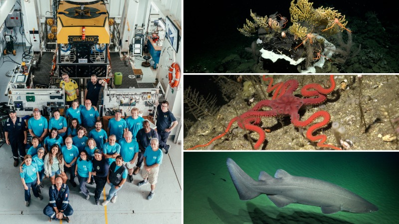

Ciencia & biodiversidad01Antiguo arrecife de coral descubierto a más de 400 metros de profundidad en Galápagos
Una expedición científica documentó un antiguo arrecife de coral en las profundidades de Galápagos, revelando nuevas claves sobre la biodiversidad marina.
Leer más ↗